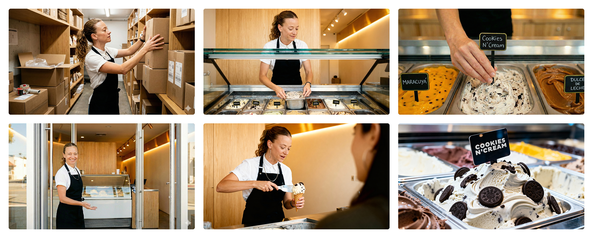
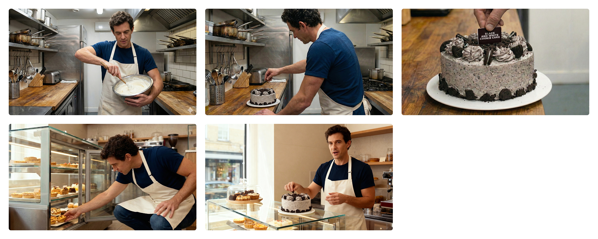

Do Not Say the Name
Do Not Say the Name is an AI-generated visual proposal developed as a speculative commercial idea.
The project imagines three everyday work situations — an ice cream shop, a restaurant and a bakery — where each character is seen performing a familiar routine before breaking the scene, looking at camera and refusing to mention the brand by name.
Built from AI-generated images, animated sequences and final video edits, the piece explores a simple comedic mechanism: the tension between product recognition, legal caution and the absurdity of saying everything except the thing everyone already understands.
2025

